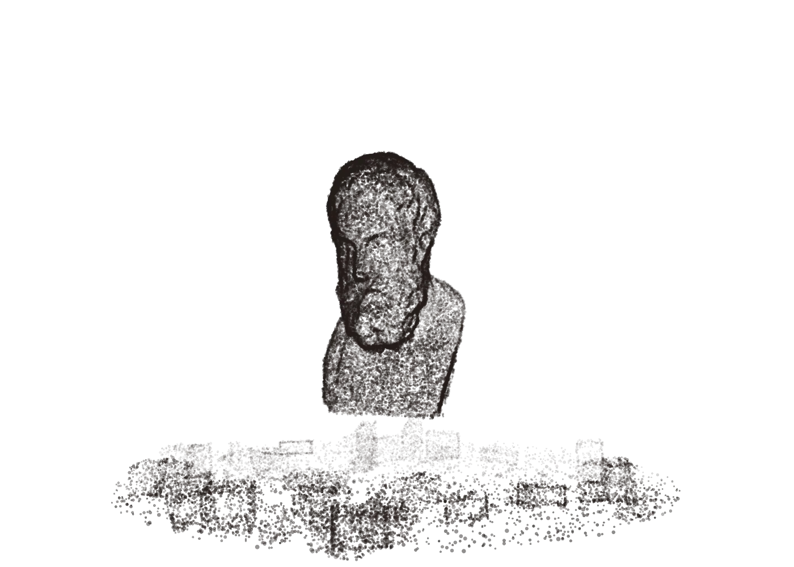

01out now
The Philosophy
of Sociology
The rules nobody wrote down. Who is enforcing them, and what happens when you ask.
Find it on the shelfThe Aporia
a student philosophy magazine
About Issue 01 · out now
001 / the monument
Bronze. On a plinth. Above eye level. A man thinking so hard it looks like it hurts.
Around him, a pile of words you were supposed to know already.
Most people take one look and decide philosophy isn't for them. Looking at this, who could blame them?
002 / ἀπορία
noun. Greek for “no way through.”
It's the moment you get stuck. You were sure you understood something, and now you can't explain it.
Socrates loved that moment. To him, it was where real thinking begins.
Most people take it as a sign to give up.
We think it's the best part. So we named the magazine after it.

003 / about
Most students meet philosophy as something intimidating: hard words, famous names, a feeling that everything you say has to be perfect. So they leave before finding out whether they like it.
Those who stay hit a second problem. There are places to send an academic essay. There is almost nowhere to send an opinion, a hunch, or an idea you tried out on your own life.
So we made one. The Aporia is run by students, for takes on philosophy that are honest, easy to read, and sometimes wrong.
The bust is Epicurus. He taught philosophy in a garden, to anyone who came.
004 / one field at a time
Every issue picks one field, like sociology or technology, and asks the questions people in it stopped asking.
01out now
The rules nobody wrote down. Who is enforcing them, and what happens when you ask.
Find it on the shelfThe Aporia
02in progress
The tools have started deciding things for us. Nobody voted on the criteria.
The Aporia
03undecided
Genuinely open. If a field deserves the treatment, tell us which one and why.
Pitch a subject soonThe Aporia
005 / your turn
You don't need a thesis. You need something you noticed and can't stop thinking about, and about a thousand words to chase it.
Write it the way you'd explain it to a friend who is interested but not impressed.
We would rather publish an interesting mistake than a safe summary.